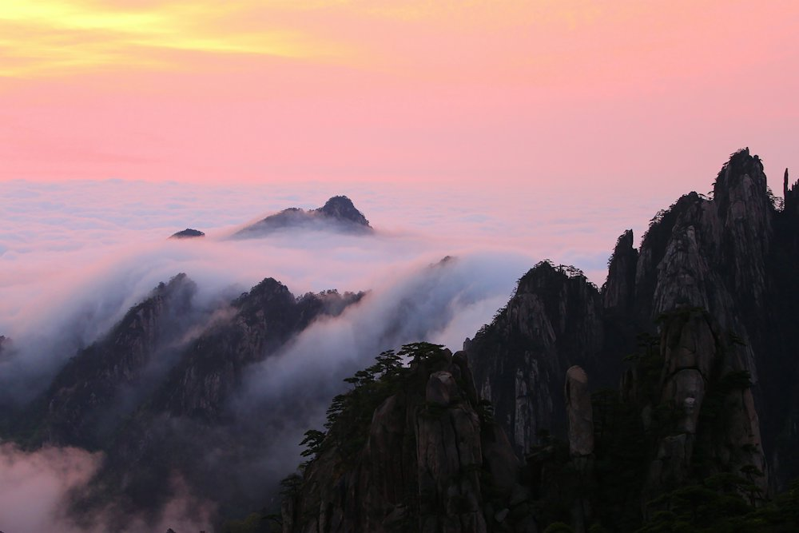

自然历年规律华东
黄山四季云海
Huangshan (Yellow Mountain) · 安徽 · 黄山
最佳时间
四季皆宜；秋(10 月)云海、冬(12–2 月)雾凇雪景
山上气候多变，云海概率以日出前后最高；冬季索道检修需留意。
五岳归来不看山，黄山归来不看岳：奇松、怪石、云海、温泉四绝同框。
不能错过
- 光明顶与始信峰是日出云海黄金机位
- 西海大峡谷冬季封闭，夏季走地轨缆车最省力
当地美食
旅人提醒
- 山上住宿贵且紧张，看日出建议山顶住一晚
- 雨后放晴云海概率最高，行前看天气再冲
月度热力与气温
4°
1
6°
2
11°
3
17°
4
22°
5
25°
6
28°
7
28°
8
23°
9
18°
10
12°
11
6°
12
适宜度（柱高，5=最佳）依据活动窗口与气候整理；气温为月均高温近似值（°C），仅供规划参考，出行前请查当地预报。
编辑核实笔记 · 整理自黄山风景区官方资料，非亲历；开放区域以景区公告为准。
预订 / 官网
官方页面：查看官网 / 官方信息 ↗ · 票价与预约以官网为准
联盟链接含占位 tracking id（Booking/Klook/Trip.com），上线替换为真实 ID 即生效；均带 utm 参数与点击统计。